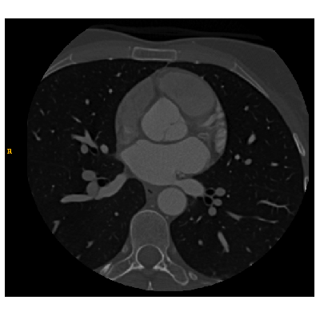

Challenge
The challenge will analyse algorithms for segmenting left atrial wall from MRI and CT.
It is part of the Statistical Modelling and Computational Modeling of the Heart (STACOM) 2016 workshop to be held at MICCAI. STACOM is supported by the cardiac atlas project. MICCAI 2016 will be held from 17th to 21st October 2016 in Athens, Greece, sponsored by IBM, Medtronic, Siemens and Kitware

Datasets
The images included in the challenge consists of MRI (n=10) and CT (n=10) datasets. The MRI images are acquired at 1.4 mm isotropic resolution. The CT images are acquired at 0.5 mm in-plane resolution with a slice thickness of 1 mm. Please see this page more information.

Taking part in the challenge
We welcome any invidividual or institution to participate in this challenge. We only ask participants to abide by the challenge's terms and conditions. Once the participant expresses their interest via this form, we will get in touch and provide a link to the datasets. To participitate in the challenge, participants must submit their algorithm's outputs by the given deadline. They have the choice to submit segmentation results from MRI or CT, or both.
Past challenges
We have administered several challenges in the past.
- Left ventricle scar published in Medical Image Analysis, 2016
- Left atrial fibrosis published in Journal of Cardiovascular Magnetic Resonance, 2013
- Left atrial segmentation pubished in IEEE Transactions Medical Imaging, 2014
- Myocardial motion tracking published in Medical Image Analysis, 2013